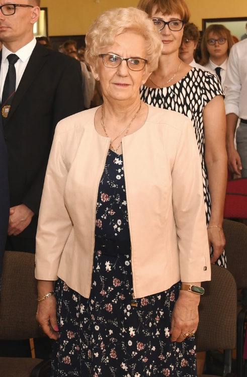
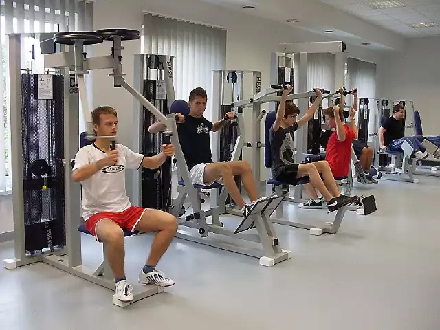
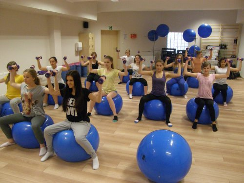

I Liceum Ogólnokształcące im. Filomatów Ziemi Michałowskiej liczy 20 oddziałów, do których uczęszcza obecnie 505 uczniów.
I LO w liczbach:
- liczba uczniów-505, w tym:
- dziewcząt: 341
- chłopców: 164
- liczba oddziałów: 20
- liczba nauczycieli-58, w tym:
- kobiet: 40
- mężczyzn: 18
- liczba pracowników administracyjnych i obsługi: 29
- powierzchnia użytkowa budynku szkoły: 3997 m2
- Liczba sal lekcyjnych-35, w tym:
- dwie sale komputerowe
- laboratoria językowe
- 33 klasopracownie wyposażone w sprzęt multimedialny
Ponadto w I LO znajduje się:
- centrum informacji naukowej i biblioteka
- laboratorium językowe
- strzelnica
- aula na 500 miejsc
- sala gimnastyczna
- sala fitness
- siłownia
- izba tradycji
- radiowęzeł
- kawiarenka szkolna
Oferta edukacyjna
Nauczyciele
- Katarzyna Boba
- Katarzyna Boińska
- Elżbieta Brzezicka-Pruchińska
- Miłosz Bzowy
- Anna Chmarzyńska
- Iwona Czupryńska-Kaliszewska
- Anna Ćwiklińska
- Lucyna Domeracka
- Bernadeta Dukat
- Wiesława Frankowska
- Marlena Gierszewska
- Sławomir Gulczyński
- Marta Jamroży
- Iwona Janiszewska
- Adam Kaczmarek
- Paulina Kalinowska-Willmann
- Renata Kamińska
- Katarzyna Karska
- Arkadiusz Kłosowski
- Mateusz Kłosowski
- Marcin Kołodziejski
- Mirosława Kowalska
- Maciej Kozłowski
- Anna Kwaśniewska
- Krystyna Kwintal
- Piotr Lendziński
- Adam Lewandowski
- ks. Paweł Lewandowski
- Wojciech Lisicki
- Dorota Lisowska
- Wiesław Łupina
- Marzena Łupińska
- Anita Małkowska
- Arkadiusz Nagórski
- Beata Nijakowska
- Małgorzata Pawłowska
- Joanna Pąk
- Milena Pieróg
- Jolanta Piotrowska
- Justyna Pniewska
- Danuta Przybylska
- Monika Puc
- Anna Radomska
- Magdalena Rogowska
- Paweł Roszak
- Anna Rumińska
- Marta Sarnowska
- Maria Skorupka
- Andrzej Sobiechowski
- Krystyna Tomasz
- Tomasz Wardowski
- Izabela Wierzchowska
- Ewa Wiśniewska
- Lech Witkowski
- Hanna Wódka
- Jakub Zakrzewski
- Wojciech Zembrzycki
- Agnieszka Ziółkowska
- Justyna Zubowicz
- Ilona Zwierzchlewska
- Dorota Żmijewska
Wiesław Łupina

Anna Rumińska
Piotr Lendziński
Tradycje szkoły
Izba tradycji
Izba Tradycji I LO im. Filomatów Ziemi Michałowskiej w Brodnicy to wyjątkowe miejsce, gdzie można przenieść się w czasie i dowiedzieć się o historii naszej szkoły. W Izbie Tradycji znajdują się ciekawe eksponaty, takie jak stare zdjęcia, dokumenty i sprzęty szkolne, które przypominają o dawnych czasach. Można zobaczyć, jak wyglądała szkoła przed laty i jak zmieniała się na przestrzeni lat.Różyczkowanie
"Różyczkowanie" to największa tradycja I LO w Brodnicy, sięgająca historią do początków istnienia szkoły. Różyczki otrzymują absolwenci, którzy zdali maturę.

Nasza szkoła posiada doskonale wyposażoną siłownię oraz halę sportową, gdzie możesz trenować i rozwijać swoje umiejętności sportowe. Ponadto oferujemy także zajęcia fitness, dzięki którym możesz utrzymać formę i poprawić swoją kondycję.
W I LO każdy uczeń ma możliwość wyboru sekcji na lekcjach wychowania fizycznego. Dzięki temu możesz rozwijać się w wybranej dziedzinie sportu, a także przeżyć wiele niezapomnianych chwil.
Nasza kadra nauczycielska to doświadczeni trenerzy oraz instruktorzy, którzy zawsze chętnie pomogą i doradzą w kwestiach związanych z treningiem i rozwojem sportowym.